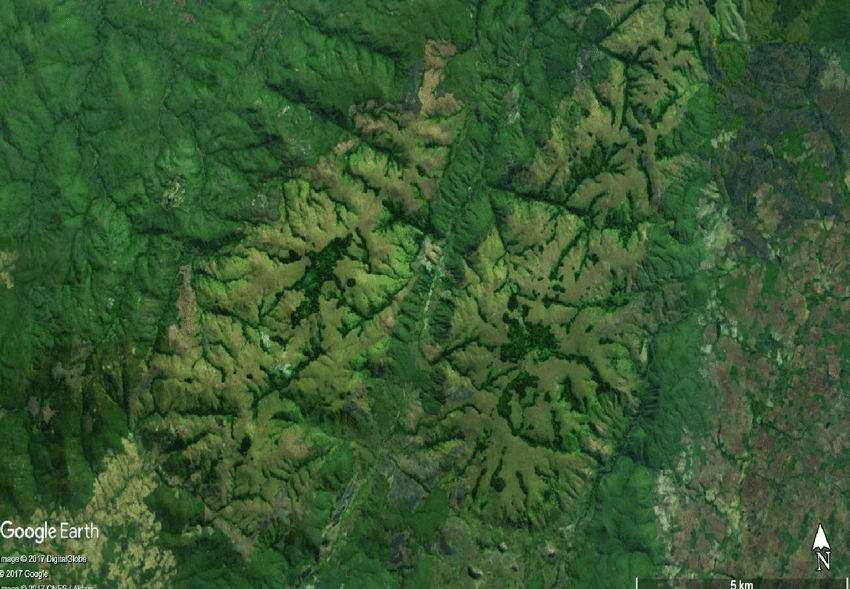

(공부) image_classification 2
Fine-tuning for Image Classification with ü§ó Transformers
This notebook shows how to fine-tune any pretrained Vision model for Image Classification on a custom dataset. The idea is to add a randomly initialized classification head on top of a pre-trained encoder, and fine-tune the model altogether on a labeled dataset.
ImageFolder
This notebook leverages the ImageFolder feature to easily run the notebook on a custom dataset (namely, EuroSAT in this tutorial). You can either load a Dataset from local folders or from local/remote files, like zip or tar.
Any model
This notebook is built to run on any image classification dataset with any vision model checkpoint from the Model Hub as long as that model has a version with a Image Classification head, such as: * ViT * Swin Transformer * ConvNeXT
- in short, any model supported by AutoModelForImageClassification.
Data augmentation
This notebook leverages Torchvision’s transforms for applying data augmentation - note that we do provide alternative notebooks which leverage other libraries, including:
Depending on the model and the GPU you are using, you might need to adjust the batch size to avoid out-of-memory errors. Set those two parameters, then the rest of the notebook should run smoothly.
In this notebook, we’ll fine-tune from the https://huggingface.co/microsoft/swin-tiny-patch4-window7-224 checkpoint, but note that there are many, many more available on the hub.
Before we start, let’s install the datasets, transformers and accelerate libraries.
WARNING: Running pip as the 'root' user can result in broken permissions and conflicting behaviour with the system package manager, possibly rendering your system unusable.It is recommended to use a virtual environment instead: https://pip.pypa.io/warnings/venv. Use the --root-user-action option if you know what you are doing and want to suppress this warning.If you’re opening this notebook locally, make sure your environment has an install from the last version of those libraries.
To be able to share your model with the community and generate results like the one shown in the picture below via the inference API, there are a few more steps to follow.
First you have to store your authentication token from the Hugging Face website (sign up here if you haven’t already!) then execute the following cell and input your token:
We also quickly upload some telemetry - this tells us which examples and software versions are getting used so we know where to prioritize our maintenance efforts. We don’t collect (or care about) any personally identifiable information, but if you’d prefer not to be counted, feel free to skip this step or delete this cell entirely.
Fine-tuning a model on an image classification task
In this notebook, we will see how to fine-tune one of the ü§ó Transformers vision models on an Image Classification dataset.
Given an image, the goal is to predict an appropriate class for it, like “tiger”. The screenshot below is taken from a ViT fine-tuned on ImageNet-1k - try out the inference widget!

Loading the dataset
We will use the ü§ó Datasets library‚Äôs ImageFolder feature to download our custom dataset into a DatasetDict.
In this case, the EuroSAT dataset is hosted remotely, so we provide the data_files argument. Alternatively, if you have local folders with images, you can load them using the data_dir argument.
from datasets import load_dataset
# load a custom dataset from local/remote files or folders using the ImageFolder feature
# option 1: local/remote files (supporting the following formats: tar, gzip, zip, xz, rar, zstd)
dataset = load_dataset("imagefolder", data_files="https://madm.dfki.de/files/sentinel/EuroSAT.zip")
# note that you can also provide several splits:
# dataset = load_dataset("imagefolder", data_files={"train": ["path/to/file1", "path/to/file2"], "test": ["path/to/file3", "path/to/file4"]})
# note that you can push your dataset to the hub very easily (and reload afterwards using load_dataset)!
# dataset.push_to_hub("nielsr/eurosat")
# dataset.push_to_hub("nielsr/eurosat", private=True)
# option 2: local folder
# dataset = load_dataset("imagefolder", data_dir="path_to_folder")
# option 3: just load any existing dataset from the hub, like CIFAR-10, FashionMNIST ...
# dataset = load_dataset("cifar10")FileNotFoundError: Unable to find 'https://madm.dfki.de/files/sentinel/EuroSAT.zip'Let us also load the Accuracy metric, which we’ll use to evaluate our model both during and after training.
/tmp/ipykernel_36201/1780215247.py:3: FutureWarning: load_metric is deprecated and will be removed in the next major version of datasets. Use 'evaluate.load' instead, from the new library ü§ó Evaluate: https://huggingface.co/docs/evaluate
metric = load_metric("accuracy")
Downloading builder script: 4.21kB [00:00, 10.7MB/s] ValueError: Loading accuracy requires you to execute the dataset script in that repo on your local machine. Make sure you have read the code there to avoid malicious use, then set the option `trust_remote_code=True` to remove this error.The dataset object itself is a DatasetDict, which contains one key per split (in this case, only “train” for a training split).
To access an actual element, you need to select a split first, then give an index:
{'image': <PIL.JpegImagePlugin.JpegImageFile image mode=RGB size=64x64 at 0x7FF2F6277B10>,
'label': 2}Each example consists of an image and a corresponding label. We can also verify this by checking the features of the dataset:
{'image': Image(decode=True, id=None),
'label': ClassLabel(num_classes=10, names=['AnnualCrop', 'Forest', 'HerbaceousVegetation', 'Highway', 'Industrial', 'Pasture', 'PermanentCrop', 'Residential', 'River', 'SeaLake'], id=None)}The cool thing is that we can directly view the image (as the ‘image’ field is an Image feature), as follows:
Let’s make it a little bigger as the images in the EuroSAT dataset are of low resolution (64x64 pixels):
Let’s print the corresponding label:
As you can see, the label field is not an actual string label. By default the ClassLabel fields are encoded into integers for convenience:
ClassLabel(num_classes=10, names=['AnnualCrop', 'Forest', 'HerbaceousVegetation', 'Highway', 'Industrial', 'Pasture', 'PermanentCrop', 'Residential', 'River', 'SeaLake'], id=None)Let’s create an id2label dictionary to decode them back to strings and see what they are. The inverse label2id will be useful too, when we load the model later.
Preprocessing the data
Before we can feed these images to our model, we need to preprocess them.
Preprocessing images typically comes down to (1) resizing them to a particular size (2) normalizing the color channels (R,G,B) using a mean and standard deviation. These are referred to as image transformations.
In addition, one typically performs what is called data augmentation during training (like random cropping and flipping) to make the model more robust and achieve higher accuracy. Data augmentation is also a great technique to increase the size of the training data.
We will use torchvision.transforms for the image transformations/data augmentation in this tutorial, but note that one can use any other package (like albumentations, imgaug, Kornia etc.).
To make sure we (1) resize to the appropriate size (2) use the appropriate image mean and standard deviation for the model architecture we are going to use, we instantiate what is called an image processor with the AutoImageProcessor.from_pretrained method.
This image processor is a minimal preprocessor that can be used to prepare images for inference.
from transformers import AutoImageProcessor
image_processor = AutoImageProcessor.from_pretrained(model_checkpoint)
image_processorViTFeatureExtractor {
"do_normalize": true,
"do_resize": true,
"feature_extractor_type": "ViTFeatureExtractor",
"image_mean": [
0.485,
0.456,
0.406
],
"image_std": [
0.229,
0.224,
0.225
],
"resample": 3,
"size": 224
}The Datasets library is made for processing data very easily. We can write custom functions, which can then be applied on an entire dataset (either using .map() or .set_transform()).
Here we define 2 separate functions, one for training (which includes data augmentation) and one for validation (which only includes resizing, center cropping and normalizing).
from torchvision.transforms import (
CenterCrop,
Compose,
Normalize,
RandomHorizontalFlip,
RandomResizedCrop,
Resize,
ToTensor,
)
normalize = Normalize(mean=image_processor.image_mean, std=image_processor.image_std)
if "height" in image_processor.size:
size = (image_processor.size["height"], image_processor.size["width"])
crop_size = size
max_size = None
elif "shortest_edge" in image_processor.size:
size = image_processor.size["shortest_edge"]
crop_size = (size, size)
max_size = image_processor.size.get("longest_edge")
train_transforms = Compose(
[
RandomResizedCrop(crop_size),
RandomHorizontalFlip(),
ToTensor(),
normalize,
]
)
val_transforms = Compose(
[
Resize(size),
CenterCrop(crop_size),
ToTensor(),
normalize,
]
)
def preprocess_train(example_batch):
"""Apply train_transforms across a batch."""
example_batch["pixel_values"] = [
train_transforms(image.convert("RGB")) for image in example_batch["image"]
]
return example_batch
def preprocess_val(example_batch):
"""Apply val_transforms across a batch."""
example_batch["pixel_values"] = [val_transforms(image.convert("RGB")) for image in example_batch["image"]]
return example_batchNext, we can preprocess our dataset by applying these functions. We will use the set_transform functionality, which allows to apply the functions above on-the-fly (meaning that they will only be applied when the images are loaded in RAM).
Let’s access an element to see that we’ve added a “pixel_values” feature:
{'image': <PIL.JpegImagePlugin.JpegImageFile image mode=RGB size=64x64 at 0x7FF2EFFB0D90>,
'label': 9,
'pixel_values': tensor([[[-0.3541, -0.3541, -0.3541, ..., -0.3712, -0.3712, -0.3712],
[-0.3541, -0.3541, -0.3541, ..., -0.3712, -0.3712, -0.3712],
[-0.3541, -0.3541, -0.3541, ..., -0.3712, -0.3712, -0.3712],
...,
[-0.4397, -0.4397, -0.4397, ..., -0.4911, -0.4911, -0.4911],
[-0.4397, -0.4397, -0.4397, ..., -0.4911, -0.4911, -0.4911],
[-0.4397, -0.4397, -0.4397, ..., -0.4911, -0.4911, -0.4911]],
[[-0.2500, -0.2500, -0.2500, ..., -0.2850, -0.2850, -0.2850],
[-0.2500, -0.2500, -0.2500, ..., -0.2850, -0.2850, -0.2850],
[-0.2500, -0.2500, -0.2500, ..., -0.2850, -0.2850, -0.2850],
...,
[-0.3550, -0.3550, -0.3550, ..., -0.4076, -0.4076, -0.4076],
[-0.3550, -0.3550, -0.3550, ..., -0.4076, -0.4076, -0.4076],
[-0.3550, -0.3550, -0.3550, ..., -0.4076, -0.4076, -0.4076]],
[[ 0.1128, 0.1128, 0.1128, ..., 0.1651, 0.1651, 0.1651],
[ 0.1128, 0.1128, 0.1128, ..., 0.1651, 0.1651, 0.1651],
[ 0.1128, 0.1128, 0.1128, ..., 0.1651, 0.1651, 0.1651],
...,
[ 0.0605, 0.0605, 0.0605, ..., 0.0082, 0.0082, 0.0082],
[ 0.0605, 0.0605, 0.0605, ..., 0.0082, 0.0082, 0.0082],
[ 0.0605, 0.0605, 0.0605, ..., 0.0082, 0.0082, 0.0082]]])}Training the model
Now that our data is ready, we can download the pretrained model and fine-tune it. For classification we use the AutoModelForImageClassification class. Calling the from_pretrained method on it will download and cache the weights for us. As the label ids and the number of labels are dataset dependent, we pass label2id, and id2label alongside the model_checkpoint here. This will make sure a custom classification head will be created (with a custom number of output neurons).
NOTE: in case you’re planning to fine-tune an already fine-tuned checkpoint, like facebook/convnext-tiny-224 (which has already been fine-tuned on ImageNet-1k), then you need to provide the additional argument ignore_mismatched_sizes=True to the from_pretrained method. This will make sure the output head (with 1000 output neurons) is thrown away and replaced by a new, randomly initialized classification head that includes a custom number of output neurons. You don’t need to specify this argument in case the pre-trained model doesn’t include a head.
from transformers import AutoModelForImageClassification, TrainingArguments, Trainer
model = AutoModelForImageClassification.from_pretrained(
model_checkpoint,
label2id=label2id,
id2label=id2label,
ignore_mismatched_sizes = True, # provide this in case you're planning to fine-tune an already fine-tuned checkpoint
)/usr/local/lib/python3.7/dist-packages/torch/functional.py:445: UserWarning: torch.meshgrid: in an upcoming release, it will be required to pass the indexing argument. (Triggered internally at ../aten/src/ATen/native/TensorShape.cpp:2157.)
return _VF.meshgrid(tensors, **kwargs) # type: ignore[attr-defined]
Some weights of SwinForImageClassification were not initialized from the model checkpoint at microsoft/swin-tiny-patch4-window7-224 and are newly initialized because the shapes did not match:
- classifier.weight: found shape torch.Size([1000, 768]) in the checkpoint and torch.Size([10, 768]) in the model instantiated
- classifier.bias: found shape torch.Size([1000]) in the checkpoint and torch.Size([10]) in the model instantiated
You should probably TRAIN this model on a down-stream task to be able to use it for predictions and inference.The warning is telling us we are throwing away some weights (the weights and bias of the classifier layer) and randomly initializing some other (the weights and bias of a new classifier layer). This is expected in this case, because we are adding a new head for which we don’t have pretrained weights, so the library warns us we should fine-tune this model before using it for inference, which is exactly what we are going to do.
To instantiate a Trainer, we will need to define the training configuration and the evaluation metric. The most important is the TrainingArguments, which is a class that contains all the attributes to customize the training. It requires one folder name, which will be used to save the checkpoints of the model.
Most of the training arguments are pretty self-explanatory, but one that is quite important here is remove_unused_columns=False. This one will drop any features not used by the model’s call function. By default it’s True because usually it’s ideal to drop unused feature columns, making it easier to unpack inputs into the model’s call function. But, in our case, we need the unused features (‘image’ in particular) in order to create ‘pixel_values’.
model_name = model_checkpoint.split("/")[-1]
args = TrainingArguments(
f"{model_name}-finetuned-eurosat",
remove_unused_columns=False,
evaluation_strategy = "epoch",
save_strategy = "epoch",
learning_rate=5e-5,
per_device_train_batch_size=batch_size,
gradient_accumulation_steps=4,
per_device_eval_batch_size=batch_size,
num_train_epochs=3,
warmup_ratio=0.1,
logging_steps=10,
load_best_model_at_end=True,
metric_for_best_model="accuracy",
push_to_hub=True,
)Here we set the evaluation to be done at the end of each epoch, tweak the learning rate, use the batch_size defined at the top of the notebook and customize the number of epochs for training, as well as the weight decay. Since the best model might not be the one at the end of training, we ask the Trainer to load the best model it saved (according to metric_name) at the end of training.
The last argument push_to_hub allows the Trainer to push the model to the Hub regularly during training. Remove it if you didn’t follow the installation steps at the top of the notebook. If you want to save your model locally with a name that is different from the name of the repository, or if you want to push your model under an organization and not your name space, use the hub_model_id argument to set the repo name (it needs to be the full name, including your namespace: for instance "nielsr/vit-finetuned-cifar10" or "huggingface/nielsr/vit-finetuned-cifar10").
Next, we need to define a function for how to compute the metrics from the predictions, which will just use the metric we loaded earlier. The only preprocessing we have to do is to take the argmax of our predicted logits:
import numpy as np
# the compute_metrics function takes a Named Tuple as input:
# predictions, which are the logits of the model as Numpy arrays,
# and label_ids, which are the ground-truth labels as Numpy arrays.
def compute_metrics(eval_pred):
"""Computes accuracy on a batch of predictions"""
predictions = np.argmax(eval_pred.predictions, axis=1)
return metric.compute(predictions=predictions, references=eval_pred.label_ids)We also define a collate_fn, which will be used to batch examples together. Each batch consists of 2 keys, namely pixel_values and labels.
Then we just need to pass all of this along with our datasets to the Trainer:
trainer = Trainer(
model,
args,
train_dataset=train_ds,
eval_dataset=val_ds,
tokenizer=image_processor,
compute_metrics=compute_metrics,
data_collator=collate_fn,
)Cloning https://huggingface.co/nielsr/swin-tiny-patch4-window7-224-finetuned-eurosat into local empty directory.You might wonder why we pass along the image_processor as a tokenizer when we already preprocessed our data. This is only to make sure the image processor configuration file (stored as JSON) will also be uploaded to the repo on the hub.
Now we can finetune our model by calling the train method:
train_results = trainer.train()
# rest is optional but nice to have
trainer.save_model()
trainer.log_metrics("train", train_results.metrics)
trainer.save_metrics("train", train_results.metrics)
trainer.save_state()/usr/local/lib/python3.7/dist-packages/transformers/optimization.py:309: FutureWarning: This implementation of AdamW is deprecated and will be removed in a future version. Use the PyTorch implementation torch.optim.AdamW instead, or set `no_deprecation_warning=True` to disable this warning
FutureWarning,
***** Running training *****
Num examples = 24300
Num Epochs = 3
Instantaneous batch size per device = 32
Total train batch size (w. parallel, distributed & accumulation) = 128
Gradient Accumulation steps = 4
Total optimization steps = 570
***** Running Evaluation *****
Num examples = 2700
Batch size = 32
Saving model checkpoint to swin-tiny-patch4-window7-224-finetuned-eurosat/checkpoint-190
Configuration saved in swin-tiny-patch4-window7-224-finetuned-eurosat/checkpoint-190/config.json
Model weights saved in swin-tiny-patch4-window7-224-finetuned-eurosat/checkpoint-190/pytorch_model.bin
Feature extractor saved in swin-tiny-patch4-window7-224-finetuned-eurosat/checkpoint-190/preprocessor_config.json
Feature extractor saved in swin-tiny-patch4-window7-224-finetuned-eurosat/preprocessor_config.json
***** Running Evaluation *****
Num examples = 2700
Batch size = 32
Saving model checkpoint to swin-tiny-patch4-window7-224-finetuned-eurosat/checkpoint-380
Configuration saved in swin-tiny-patch4-window7-224-finetuned-eurosat/checkpoint-380/config.json
Model weights saved in swin-tiny-patch4-window7-224-finetuned-eurosat/checkpoint-380/pytorch_model.bin
Feature extractor saved in swin-tiny-patch4-window7-224-finetuned-eurosat/checkpoint-380/preprocessor_config.json
Feature extractor saved in swin-tiny-patch4-window7-224-finetuned-eurosat/preprocessor_config.json
***** Running Evaluation *****
Num examples = 2700
Batch size = 32
Saving model checkpoint to swin-tiny-patch4-window7-224-finetuned-eurosat/checkpoint-570
Configuration saved in swin-tiny-patch4-window7-224-finetuned-eurosat/checkpoint-570/config.json
Model weights saved in swin-tiny-patch4-window7-224-finetuned-eurosat/checkpoint-570/pytorch_model.bin
Feature extractor saved in swin-tiny-patch4-window7-224-finetuned-eurosat/checkpoint-570/preprocessor_config.json
Feature extractor saved in swin-tiny-patch4-window7-224-finetuned-eurosat/preprocessor_config.json
Training completed. Do not forget to share your model on huggingface.co/models =)
Loading best model from swin-tiny-patch4-window7-224-finetuned-eurosat/checkpoint-570 (score: 0.9744444444444444).
Saving model checkpoint to swin-tiny-patch4-window7-224-finetuned-eurosat
Configuration saved in swin-tiny-patch4-window7-224-finetuned-eurosat/config.json
Model weights saved in swin-tiny-patch4-window7-224-finetuned-eurosat/pytorch_model.bin
Feature extractor saved in swin-tiny-patch4-window7-224-finetuned-eurosat/preprocessor_config.json
Saving model checkpoint to swin-tiny-patch4-window7-224-finetuned-eurosat
Configuration saved in swin-tiny-patch4-window7-224-finetuned-eurosat/config.json
Model weights saved in swin-tiny-patch4-window7-224-finetuned-eurosat/pytorch_model.bin
Feature extractor saved in swin-tiny-patch4-window7-224-finetuned-eurosat/preprocessor_config.json
Several commits (2) will be pushed upstream.
The progress bars may be unreliable.
To https://huggingface.co/nielsr/swin-tiny-patch4-window7-224-finetuned-eurosat
b46a767..6d6b8dc main -> main
To https://huggingface.co/nielsr/swin-tiny-patch4-window7-224-finetuned-eurosat
6d6b8dc..25dd5d7 main -> main
| Epoch | Training Loss | Validation Loss | Accuracy |
|---|---|---|---|
| 1 | 0.262100 | 0.108344 | 0.962963 |
| 2 | 0.176900 | 0.142533 | 0.950000 |
| 3 | 0.134300 | 0.066442 | 0.974444 |
***** train metrics *****
epoch = 3.0
total_flos = 1687935228GF
train_loss = 0.3276
train_runtime = 0:16:13.91
train_samples_per_second = 74.852
train_steps_per_second = 0.585We can check with the evaluate method that our Trainer did reload the best model properly (if it was not the last one):
metrics = trainer.evaluate()
# some nice to haves:
trainer.log_metrics("eval", metrics)
trainer.save_metrics("eval", metrics)***** Running Evaluation *****
Num examples = 2700
Batch size = 32***** eval metrics *****
epoch = 3.0
eval_accuracy = 0.9744
eval_loss = 0.0664
eval_runtime = 0:00:16.12
eval_samples_per_second = 167.48
eval_steps_per_second = 5.273You can now upload the result of the training to the Hub, just execute this instruction (note that the Trainer will automatically create a model card as well as Tensorboard logs - see the “Training metrics” tab - amazing isn’t it?):
Saving model checkpoint to swin-tiny-patch4-window7-224-finetuned-eurosat
Configuration saved in swin-tiny-patch4-window7-224-finetuned-eurosat/config.json
Model weights saved in swin-tiny-patch4-window7-224-finetuned-eurosat/pytorch_model.bin
Feature extractor saved in swin-tiny-patch4-window7-224-finetuned-eurosat/preprocessor_config.json
To https://huggingface.co/nielsr/swin-tiny-patch4-window7-224-finetuned-eurosat
25dd5d7..2164338 main -> main
'https://huggingface.co/nielsr/swin-tiny-patch4-window7-224-finetuned-eurosat/commit/2164338db59d40004286bc65800bfa50561ecd3d'You can now share this model with all your friends, family, favorite pets: they can all load it with the identifier "your-username/the-name-you-picked" so for instance:
Inference
Let’s say you have a new image, on which you’d like to make a prediction. Let’s load a satellite image of a forest (that’s not part of the EuroSAT dataset), and see how the model does.
from PIL import Image
import requests
url = 'https://huggingface.co/nielsr/convnext-tiny-finetuned-eurostat/resolve/main/forest.png'
image = Image.open(requests.get(url, stream=True).raw)
image
We’ll load the image processor and model from the hub (here, we use the Auto Classes, which will make sure the appropriate classes will be loaded automatically based on the config.json and preprocessor_config.json files of the repo on the hub):
from transformers import AutoModelForImageClassification, AutoImageProcessor
repo_name = "nielsr/swin-tiny-patch4-window7-224-finetuned-eurosat"
image_processor = AutoImageProcessor.from_pretrained(repo_name)
model = AutoModelForImageClassification.from_pretrained(repo_name)https://huggingface.co/nielsr/swin-tiny-patch4-window7-224-finetuned-eurosat/resolve/main/preprocessor_config.json not found in cache or force_download set to True, downloading to /root/.cache/huggingface/transformers/tmpqggthctf
storing https://huggingface.co/nielsr/swin-tiny-patch4-window7-224-finetuned-eurosat/resolve/main/preprocessor_config.json in cache at /root/.cache/huggingface/transformers/7b742d61fc51f2ef5f81a75f80b26419c9f5bd86cc3022ed5784d09823f219f2.e34548f8325ec440fcf4990d4a8dbbfd665397400e9a700766de032d2b45cf6b
creating metadata file for /root/.cache/huggingface/transformers/7b742d61fc51f2ef5f81a75f80b26419c9f5bd86cc3022ed5784d09823f219f2.e34548f8325ec440fcf4990d4a8dbbfd665397400e9a700766de032d2b45cf6b
loading feature extractor configuration file https://huggingface.co/nielsr/swin-tiny-patch4-window7-224-finetuned-eurosat/resolve/main/preprocessor_config.json from cache at /root/.cache/huggingface/transformers/7b742d61fc51f2ef5f81a75f80b26419c9f5bd86cc3022ed5784d09823f219f2.e34548f8325ec440fcf4990d4a8dbbfd665397400e9a700766de032d2b45cf6b
Feature extractor ViTFeatureExtractor {
"do_normalize": true,
"do_resize": true,
"feature_extractor_type": "ViTFeatureExtractor",
"image_mean": [
0.485,
0.456,
0.406
],
"image_std": [
0.229,
0.224,
0.225
],
"resample": 3,
"size": 224
}
https://huggingface.co/nielsr/swin-tiny-patch4-window7-224-finetuned-eurosat/resolve/main/config.json not found in cache or force_download set to True, downloading to /root/.cache/huggingface/transformers/tmpzdd89w3g
storing https://huggingface.co/nielsr/swin-tiny-patch4-window7-224-finetuned-eurosat/resolve/main/config.json in cache at /root/.cache/huggingface/transformers/83e4a1dea85e8e284e4da8ae1e3cf950c2c7e74d65a5a188049b3371fcd151bd.f1ed4852dd8f4c3d0c565427607bc41fff51b58ac73a0970bec8456e5c64cea0
creating metadata file for /root/.cache/huggingface/transformers/83e4a1dea85e8e284e4da8ae1e3cf950c2c7e74d65a5a188049b3371fcd151bd.f1ed4852dd8f4c3d0c565427607bc41fff51b58ac73a0970bec8456e5c64cea0
loading configuration file https://huggingface.co/nielsr/swin-tiny-patch4-window7-224-finetuned-eurosat/resolve/main/config.json from cache at /root/.cache/huggingface/transformers/83e4a1dea85e8e284e4da8ae1e3cf950c2c7e74d65a5a188049b3371fcd151bd.f1ed4852dd8f4c3d0c565427607bc41fff51b58ac73a0970bec8456e5c64cea0
Model config SwinConfig {
"_name_or_path": "nielsr/swin-tiny-patch4-window7-224-finetuned-eurosat",
"architectures": [
"SwinForImageClassification"
],
"attention_probs_dropout_prob": 0.0,
"depths": [
2,
2,
6,
2
],
"drop_path_rate": 0.1,
"embed_dim": 96,
"encoder_stride": 32,
"hidden_act": "gelu",
"hidden_dropout_prob": 0.0,
"hidden_size": 768,
"id2label": {
"0": "AnnualCrop",
"1": "Forest",
"2": "HerbaceousVegetation",
"3": "Highway",
"4": "Industrial",
"5": "Pasture",
"6": "PermanentCrop",
"7": "Residential",
"8": "River",
"9": "SeaLake"
},
"image_size": 224,
"initializer_range": 0.02,
"label2id": {
"AnnualCrop": 0,
"Forest": 1,
"HerbaceousVegetation": 2,
"Highway": 3,
"Industrial": 4,
"Pasture": 5,
"PermanentCrop": 6,
"Residential": 7,
"River": 8,
"SeaLake": 9
},
"layer_norm_eps": 1e-05,
"mlp_ratio": 4.0,
"model_type": "swin",
"num_channels": 3,
"num_heads": [
3,
6,
12,
24
],
"num_layers": 4,
"patch_size": 4,
"path_norm": true,
"problem_type": "single_label_classification",
"qkv_bias": true,
"torch_dtype": "float32",
"transformers_version": "4.18.0",
"use_absolute_embeddings": false,
"window_size": 7
}
https://huggingface.co/nielsr/swin-tiny-patch4-window7-224-finetuned-eurosat/resolve/main/pytorch_model.bin not found in cache or force_download set to True, downloading to /root/.cache/huggingface/transformers/tmpkh0vdu53
storing https://huggingface.co/nielsr/swin-tiny-patch4-window7-224-finetuned-eurosat/resolve/main/pytorch_model.bin in cache at /root/.cache/huggingface/transformers/3daadbe0cabef18dc0e2232ae080d135a9d4ee6b1dc7675725ef38bedb990b81.818e63819e125637bd8a94f43b6899d1552f0b45884f1c28c458a5cb55dfa9e5
creating metadata file for /root/.cache/huggingface/transformers/3daadbe0cabef18dc0e2232ae080d135a9d4ee6b1dc7675725ef38bedb990b81.818e63819e125637bd8a94f43b6899d1552f0b45884f1c28c458a5cb55dfa9e5
loading weights file https://huggingface.co/nielsr/swin-tiny-patch4-window7-224-finetuned-eurosat/resolve/main/pytorch_model.bin from cache at /root/.cache/huggingface/transformers/3daadbe0cabef18dc0e2232ae080d135a9d4ee6b1dc7675725ef38bedb990b81.818e63819e125637bd8a94f43b6899d1552f0b45884f1c28c458a5cb55dfa9e5
All model checkpoint weights were used when initializing SwinForImageClassification.
All the weights of SwinForImageClassification were initialized from the model checkpoint at nielsr/swin-tiny-patch4-window7-224-finetuned-eurosat.
If your task is similar to the task the model of the checkpoint was trained on, you can already use SwinForImageClassification for predictions without further training.# prepare image for the model
encoding = image_processor(image.convert("RGB"), return_tensors="pt")
print(encoding.pixel_values.shape)torch.Size([1, 3, 224, 224])predicted_class_idx = logits.argmax(-1).item()
print("Predicted class:", model.config.id2label[predicted_class_idx])Predicted class: ForestLooks like our model got it correct!
Pipeline API
An alternative way to quickly perform inference with any model on the hub is by leveraging the Pipeline API, which abstracts away all the steps we did manually above for us. It will perform the preprocessing, forward pass and postprocessing all in a single object.
Let’s showcase this for our trained model:
from transformers import pipeline
pipe = pipeline("image-classification", "nielsr/swin-tiny-patch4-window7-224-finetuned-eurosat")loading configuration file https://huggingface.co/nielsr/swin-tiny-patch4-window7-224-finetuned-eurosat/resolve/main/config.json from cache at /root/.cache/huggingface/transformers/83e4a1dea85e8e284e4da8ae1e3cf950c2c7e74d65a5a188049b3371fcd151bd.f1ed4852dd8f4c3d0c565427607bc41fff51b58ac73a0970bec8456e5c64cea0
Model config SwinConfig {
"_name_or_path": "nielsr/swin-tiny-patch4-window7-224-finetuned-eurosat",
"architectures": [
"SwinForImageClassification"
],
"attention_probs_dropout_prob": 0.0,
"depths": [
2,
2,
6,
2
],
"drop_path_rate": 0.1,
"embed_dim": 96,
"encoder_stride": 32,
"hidden_act": "gelu",
"hidden_dropout_prob": 0.0,
"hidden_size": 768,
"id2label": {
"0": "AnnualCrop",
"1": "Forest",
"2": "HerbaceousVegetation",
"3": "Highway",
"4": "Industrial",
"5": "Pasture",
"6": "PermanentCrop",
"7": "Residential",
"8": "River",
"9": "SeaLake"
},
"image_size": 224,
"initializer_range": 0.02,
"label2id": {
"AnnualCrop": 0,
"Forest": 1,
"HerbaceousVegetation": 2,
"Highway": 3,
"Industrial": 4,
"Pasture": 5,
"PermanentCrop": 6,
"Residential": 7,
"River": 8,
"SeaLake": 9
},
"layer_norm_eps": 1e-05,
"mlp_ratio": 4.0,
"model_type": "swin",
"num_channels": 3,
"num_heads": [
3,
6,
12,
24
],
"num_layers": 4,
"patch_size": 4,
"path_norm": true,
"problem_type": "single_label_classification",
"qkv_bias": true,
"torch_dtype": "float32",
"transformers_version": "4.18.0",
"use_absolute_embeddings": false,
"window_size": 7
}
loading configuration file https://huggingface.co/nielsr/swin-tiny-patch4-window7-224-finetuned-eurosat/resolve/main/config.json from cache at /root/.cache/huggingface/transformers/83e4a1dea85e8e284e4da8ae1e3cf950c2c7e74d65a5a188049b3371fcd151bd.f1ed4852dd8f4c3d0c565427607bc41fff51b58ac73a0970bec8456e5c64cea0
Model config SwinConfig {
"_name_or_path": "nielsr/swin-tiny-patch4-window7-224-finetuned-eurosat",
"architectures": [
"SwinForImageClassification"
],
"attention_probs_dropout_prob": 0.0,
"depths": [
2,
2,
6,
2
],
"drop_path_rate": 0.1,
"embed_dim": 96,
"encoder_stride": 32,
"hidden_act": "gelu",
"hidden_dropout_prob": 0.0,
"hidden_size": 768,
"id2label": {
"0": "AnnualCrop",
"1": "Forest",
"2": "HerbaceousVegetation",
"3": "Highway",
"4": "Industrial",
"5": "Pasture",
"6": "PermanentCrop",
"7": "Residential",
"8": "River",
"9": "SeaLake"
},
"image_size": 224,
"initializer_range": 0.02,
"label2id": {
"AnnualCrop": 0,
"Forest": 1,
"HerbaceousVegetation": 2,
"Highway": 3,
"Industrial": 4,
"Pasture": 5,
"PermanentCrop": 6,
"Residential": 7,
"River": 8,
"SeaLake": 9
},
"layer_norm_eps": 1e-05,
"mlp_ratio": 4.0,
"model_type": "swin",
"num_channels": 3,
"num_heads": [
3,
6,
12,
24
],
"num_layers": 4,
"patch_size": 4,
"path_norm": true,
"problem_type": "single_label_classification",
"qkv_bias": true,
"torch_dtype": "float32",
"transformers_version": "4.18.0",
"use_absolute_embeddings": false,
"window_size": 7
}
loading weights file https://huggingface.co/nielsr/swin-tiny-patch4-window7-224-finetuned-eurosat/resolve/main/pytorch_model.bin from cache at /root/.cache/huggingface/transformers/3daadbe0cabef18dc0e2232ae080d135a9d4ee6b1dc7675725ef38bedb990b81.818e63819e125637bd8a94f43b6899d1552f0b45884f1c28c458a5cb55dfa9e5
All model checkpoint weights were used when initializing SwinForImageClassification.
All the weights of SwinForImageClassification were initialized from the model checkpoint at nielsr/swin-tiny-patch4-window7-224-finetuned-eurosat.
If your task is similar to the task the model of the checkpoint was trained on, you can already use SwinForImageClassification for predictions without further training.
loading feature extractor configuration file https://huggingface.co/nielsr/swin-tiny-patch4-window7-224-finetuned-eurosat/resolve/main/preprocessor_config.json from cache at /root/.cache/huggingface/transformers/7b742d61fc51f2ef5f81a75f80b26419c9f5bd86cc3022ed5784d09823f219f2.e34548f8325ec440fcf4990d4a8dbbfd665397400e9a700766de032d2b45cf6b
Feature extractor ViTFeatureExtractor {
"do_normalize": true,
"do_resize": true,
"feature_extractor_type": "ViTFeatureExtractor",
"image_mean": [
0.485,
0.456,
0.406
],
"image_std": [
0.229,
0.224,
0.225
],
"resample": 3,
"size": 224
}
[{'label': 'Forest', 'score': 0.7000269889831543},
{'label': 'HerbaceousVegetation', 'score': 0.14589950442314148},
{'label': 'Pasture', 'score': 0.10370415449142456},
{'label': 'Highway', 'score': 0.014327816665172577},
{'label': 'Residential', 'score': 0.0139168007299304}]As we can see, it does not only show the class label with the highest probability, but does return the top 5 labels, with their corresponding scores. Note that the pipelines also work with local models and mage processors: